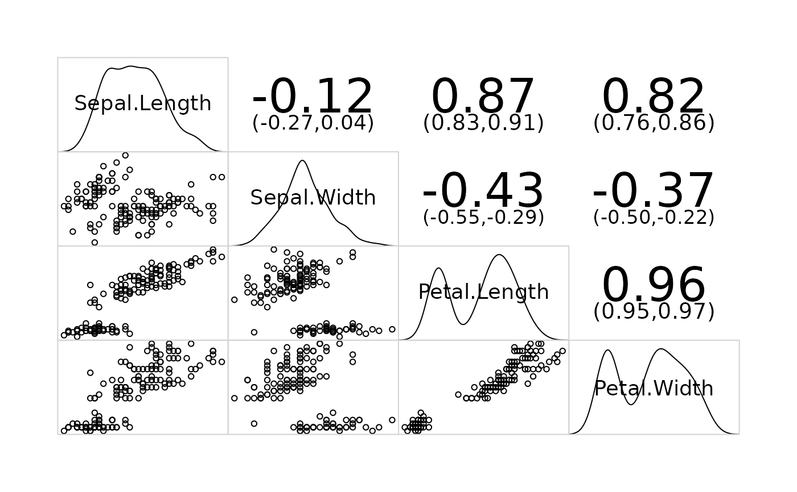
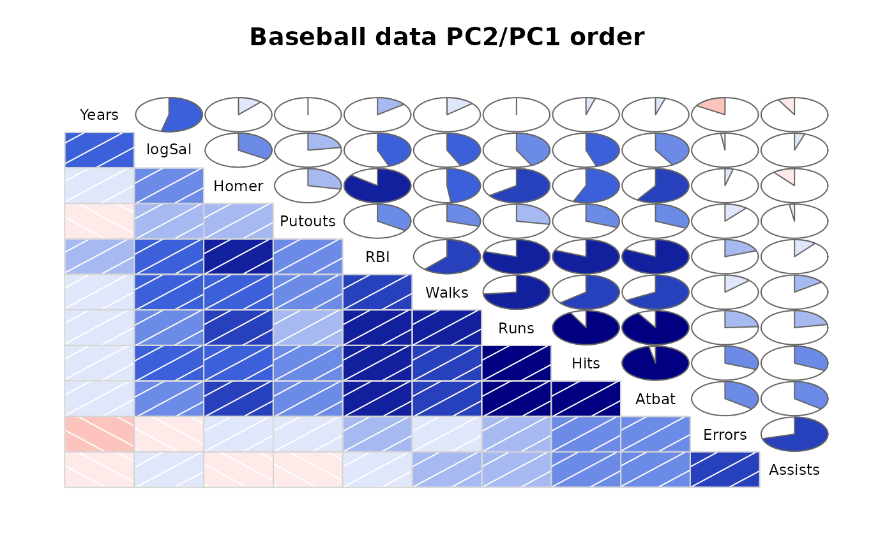
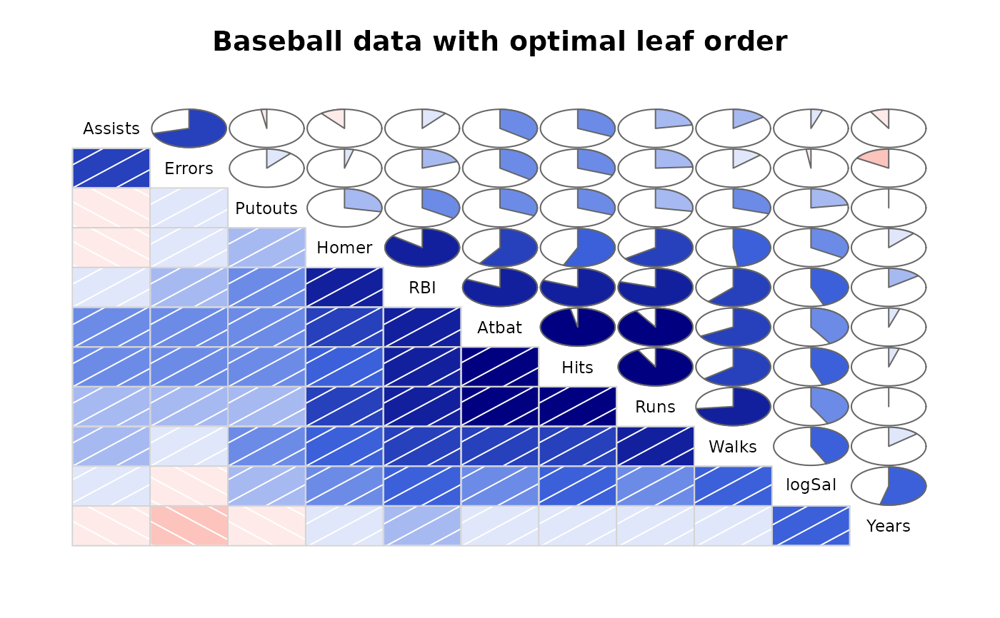
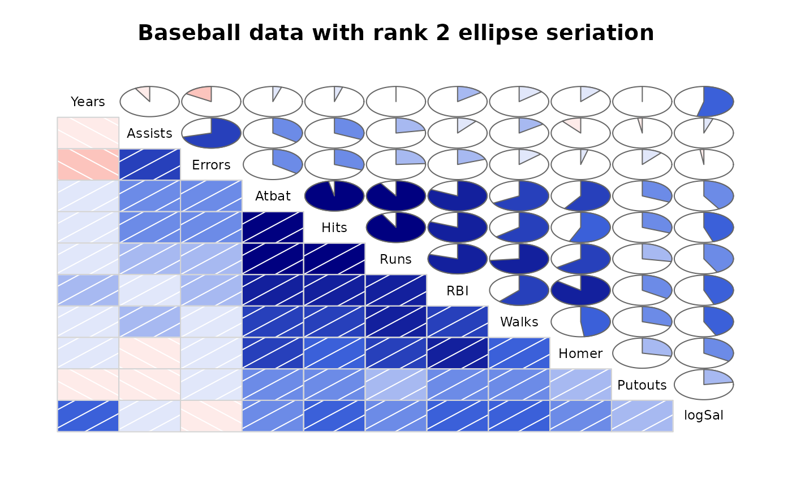
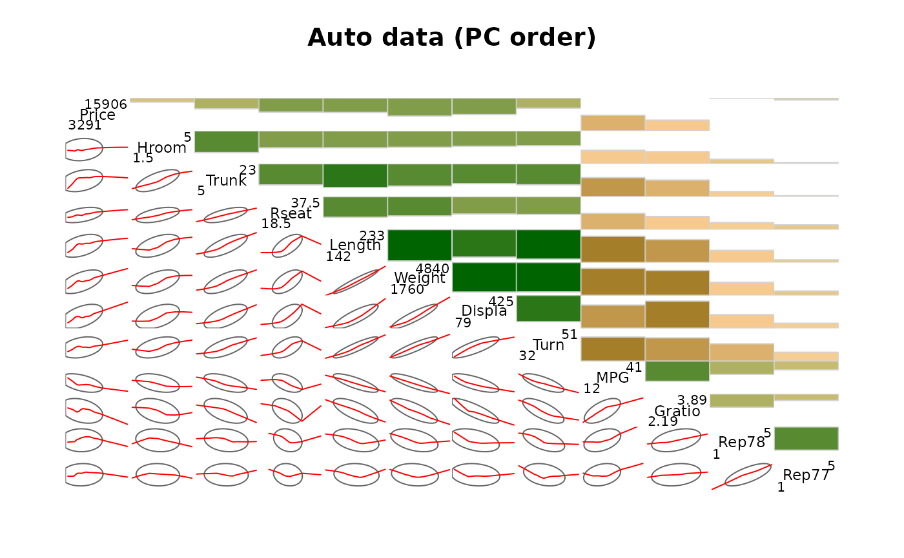
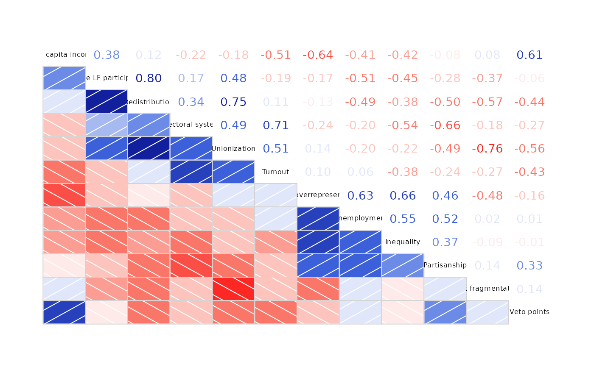
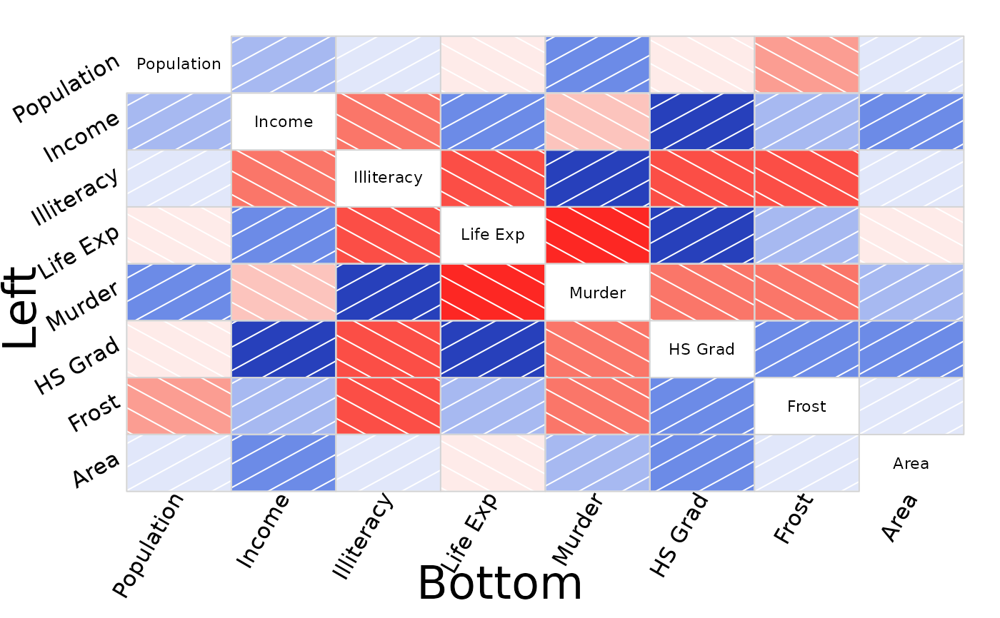

The corrgram function produces a graphical display of a correlation matrix, called a correlogram. The cells of the matrix can be shaded or colored to show the correlation value. Automatic variable reordering can be used to improve the visualization.
Usage
corrgram(
x,
type = NULL,
order = FALSE,
labels,
panel = panel.shade,
lower.panel = panel,
upper.panel = panel,
diag.panel = NULL,
text.panel = textPanel,
label.pos = c(0.5, 0.5),
label.srt = 0,
cex.labels = NULL,
font.labels = 1,
row1attop = TRUE,
dir = "",
gap = 0,
abs = FALSE,
col.regions = colorRampPalette(c("red", "salmon", "white", "royalblue", "navy")),
cor.method = "pearson",
outer.labels = NULL,
...
)Arguments
- x
A tall data frame with one observation per row, or a correlation matrix.
- type
Use 'data' or 'cor'/'corr' to explicitly specify that 'x' is data or a correlation matrix. Rarely needed.
- order
Should variables be re-ordered? This will improve the visualization by placing similar variables next to each other. Use TRUE or "PCA" for angular PCA-based re-ordering (see Friendly, 2002). If the 'seriation' package is installed, then any distance-based method for seriate can be used. Examples are "OLO" for optimal leaf ordering, "GW", "HC", and "MDS" (see Hahsler and Buchta, 2008).
- labels
Labels to use (instead of data frame variable names) for diagonal panels. If 'order' option is used, this vector of labels will be also be appropriately reordered by the function.
- panel
Function used to plot the contents of each panel.
- lower.panel, upper.panel
Separate panel functions used below/above the diagonal.
- diag.panel, text.panel
Panel function used on the diagonal.
- label.pos
Horizontal and vertical placement of label in diagonal panels.
- label.srt
String rotation for diagonal labels.
- cex.labels, font.labels
Graphics parameter for diagonal panels.
- row1attop
TRUE for diagonal like " \ ", FALSE for diagonal like " / ".
- dir
Use
dir="left"instead of 'row1attop'.- gap
Distance between panels.
- abs
Use absolute value of correlations for clustering? Default FALSE.
- col.regions
A function returning a vector of colors.
- cor.method
Correlation method to use in panel functions. Default is 'pearson'. Alternatives: 'spearman', 'kendall'.
- outer.labels
A list of the form 'list(bottom,left,top,right)'. If 'bottom=TRUE' (for example), variable labels are added along the bottom outside edge.
For more control, use 'bottom=list(labels,cex,srt,adj)', where 'labels' is a vector of variable labels, 'cex' affects the size, 'srt' affects the rotation, and 'adj' affects the adjustment of the labels. Defaults: 'labels' uses column names; cex=1'; 'srt=90' (bottom/top), 'srt=0' (left/right); 'adj=1' (bottom/left), 'adj=0' (top/right).
- ...
Additional arguments passed to plotting methods.
Value
The correlation matrix used for plotting is returned. The 'order' and 'abs' arguments affect the returned value.
Details
Note: Use the 'col.regions' argument to specify colors.
Non-numeric columns in the data will be ignored.
The off-diagonal panels are specified with panel.pts,
panel.pie, panel.shade, panel.fill, `panel.bar,
panel.ellipse, panel.conf. panel.cor.
Diagonal panels are specified with panel.txt, panel.minmax,
panel.density.
Use a NULL panel to omit drawing the panel.
This function is basically a modification of the pairs.default
function with the use of customized panel functions.
The panel.conf function uses cor.test and calculates pearson
correlations. Confidence intervals are not available in cor.test for
other methods (kendall, spearman).
You can create your own panel functions by starting with one of the included
panel functions and making suitable modifications. Note that because of the
way the panel functions are called inside the main function, your custom
panel function must include the arguments shown in the panel.pts
function, even if the custom panel function does not use those arguments!
TODO: legend, grid graphics version.
References
Friendly, Michael. 2002. Corrgrams: Exploratory Displays for Correlation Matrices. The American Statistician, 56, 316–324. http://datavis.ca/papers/corrgram.pdf
D. J. Murdoch and E. D. Chow. 1996. A Graphical Display of Large Correlation Matrices. The American Statistician, 50, 178-180.
Hahsler M, Hornik K, Buchta C. 2008. Getting things in order: An introduction to the R package seriation. Journal of Statistical Software, 25(3), 1–34. ISSN 1548-7660, doi:10.18637/jss.v025.i03
Examples
# To reproduce the figures in Michael Friendly's paper, see the
# vignette, or see the file 'friendly.r' in this package's
# test directory.
# Demonstrate density panel, correlation confidence panel
corrgram(iris, lower.panel=panel.pts, upper.panel=panel.conf,
diag.panel=panel.density)
#> Warning: argument 1 does not name a graphical parameter
#> Warning: argument 1 does not name a graphical parameter
#> Warning: argument 1 does not name a graphical parameter
#> Warning: argument 1 does not name a graphical parameter
#> Warning: argument 1 does not name a graphical parameter
#> Warning: argument 1 does not name a graphical parameter

# Demonstrate panel.shade, panel.pie, principal component ordering
vars2 <- c("Assists","Atbat","Errors","Hits","Homer","logSal",
"Putouts","RBI","Runs","Walks","Years")
corrgram(baseball[vars2], order=TRUE, main="Baseball data PC2/PC1 order",
lower.panel=panel.shade, upper.panel=panel.pie)

# Use reordering options from package seriation (only available if
# package seriation is installed)
if ("seriation" %in% rownames(installed.packages())) {
corrgram(baseball[vars2], order= "OLO",
main="Baseball data with optimal leaf order",
lower.panel=panel.shade, upper.panel=panel.pie)
corrgram(baseball[vars2], order= "R2E",
main="Baseball data with rank 2 ellipse seriation",
lower.panel=panel.shade, upper.panel=panel.pie)
# the following seriation methods are available
seriation::list_seriation_methods("dist")
}


#> [1] "ARSA" "BBURCG" "BBWRCG" "Enumerate"
#> [5] "GSA" "GW" "GW_average" "GW_complete"
#> [9] "GW_single" "GW_ward" "HC" "HC_average"
#> [13] "HC_complete" "HC_single" "HC_ward" "Identity"
#> [17] "MDS" "MDS_angle" "OLO" "OLO_average"
#> [21] "OLO_complete" "OLO_single" "OLO_ward" "QAP_2SUM"
#> [25] "QAP_BAR" "QAP_Inertia" "QAP_LS" "R2E"
#> [29] "Random" "Reverse" "SGD" "SPIN_NH"
#> [33] "SPIN_STS" "Sammon_mapping" "Spectral" "Spectral_norm"
#> [37] "TSP" "VAT" "isoMDS" "isomap"
#> [41] "metaMDS" "monoMDS"
# CAUTION: The latticeExtra package also has a 'panel.ellipse' function
# that clashes with the same-named function in corrgram. In order to use
# the right one, the example below uses 'lower.panel=corrgram::panel.ellipse'.
# If you do not have latticeExtra loaded, you can just use
# 'lower.panel=panel.ellipse'.
# Demonstrate panel.bar, panel.ellipse, panel.minmax, col.regions
corrgram(auto, order=TRUE, main="Auto data (PC order)",
lower.panel=corrgram::panel.ellipse,
upper.panel=panel.bar, diag.panel=panel.minmax,
col.regions=colorRampPalette(c("darkgoldenrod4", "burlywood1",
"darkkhaki", "darkgreen")))

# 'vote' is a correlation matrix, not a data frame
corrgram(vote, order=TRUE, upper.panel=panel.cor)
#> Warning: argument 1 does not name a graphical parameter
#> Warning: argument 1 does not name a graphical parameter
#> Warning: argument 1 does not name a graphical parameter
#> Warning: argument 1 does not name a graphical parameter
#> Warning: argument 1 does not name a graphical parameter
#> Warning: argument 1 does not name a graphical parameter
#> Warning: argument 1 does not name a graphical parameter
#> Warning: argument 1 does not name a graphical parameter
#> Warning: argument 1 does not name a graphical parameter
#> Warning: argument 1 does not name a graphical parameter
#> Warning: argument 1 does not name a graphical parameter
#> Warning: argument 1 does not name a graphical parameter
#> Warning: argument 1 does not name a graphical parameter
#> Warning: argument 1 does not name a graphical parameter
#> Warning: argument 1 does not name a graphical parameter
#> Warning: argument 1 does not name a graphical parameter
#> Warning: argument 1 does not name a graphical parameter
#> Warning: argument 1 does not name a graphical parameter
#> Warning: argument 1 does not name a graphical parameter
#> Warning: argument 1 does not name a graphical parameter
#> Warning: argument 1 does not name a graphical parameter
#> Warning: argument 1 does not name a graphical parameter
#> Warning: argument 1 does not name a graphical parameter
#> Warning: argument 1 does not name a graphical parameter
#> Warning: argument 1 does not name a graphical parameter
#> Warning: argument 1 does not name a graphical parameter
#> Warning: argument 1 does not name a graphical parameter
#> Warning: argument 1 does not name a graphical parameter
#> Warning: argument 1 does not name a graphical parameter
#> Warning: argument 1 does not name a graphical parameter
#> Warning: argument 1 does not name a graphical parameter
#> Warning: argument 1 does not name a graphical parameter
#> Warning: argument 1 does not name a graphical parameter
#> Warning: argument 1 does not name a graphical parameter
#> Warning: argument 1 does not name a graphical parameter
#> Warning: argument 1 does not name a graphical parameter
#> Warning: argument 1 does not name a graphical parameter
#> Warning: argument 1 does not name a graphical parameter
#> Warning: argument 1 does not name a graphical parameter
#> Warning: argument 1 does not name a graphical parameter
#> Warning: argument 1 does not name a graphical parameter
#> Warning: argument 1 does not name a graphical parameter
#> Warning: argument 1 does not name a graphical parameter
#> Warning: argument 1 does not name a graphical parameter
#> Warning: argument 1 does not name a graphical parameter
#> Warning: argument 1 does not name a graphical parameter
#> Warning: argument 1 does not name a graphical parameter
#> Warning: argument 1 does not name a graphical parameter
#> Warning: argument 1 does not name a graphical parameter
#> Warning: argument 1 does not name a graphical parameter
#> Warning: argument 1 does not name a graphical parameter
#> Warning: argument 1 does not name a graphical parameter
#> Warning: argument 1 does not name a graphical parameter
#> Warning: argument 1 does not name a graphical parameter
#> Warning: argument 1 does not name a graphical parameter
#> Warning: argument 1 does not name a graphical parameter
#> Warning: argument 1 does not name a graphical parameter
#> Warning: argument 1 does not name a graphical parameter
#> Warning: argument 1 does not name a graphical parameter
#> Warning: argument 1 does not name a graphical parameter
#> Warning: argument 1 does not name a graphical parameter
#> Warning: argument 1 does not name a graphical parameter
#> Warning: argument 1 does not name a graphical parameter
#> Warning: argument 1 does not name a graphical parameter
#> Warning: argument 1 does not name a graphical parameter
#> Warning: argument 1 does not name a graphical parameter

# outer labels, all options, larger margins, xlab, ylab
labs=colnames(state.x77)
corrgram(state.x77, oma=c(7, 7, 2, 2),
outer.labels=list(bottom=list(labels=labs,cex=1.5,srt=60),
left=list(labels=labs,cex=1.5,srt=30,adj=c(1,0))))
mtext("Bottom", side=1, cex=2, line = -1.5, outer=TRUE, xpd=NA)
mtext("Left", side=2, cex=2, line = -1.5, outer=TRUE, xpd=NA)
